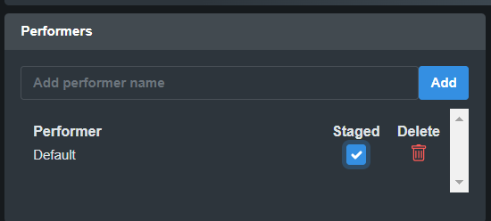
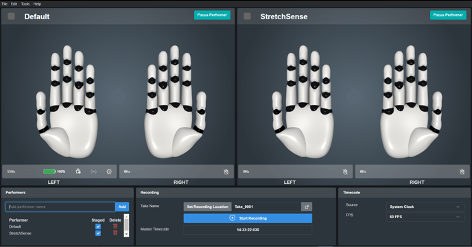
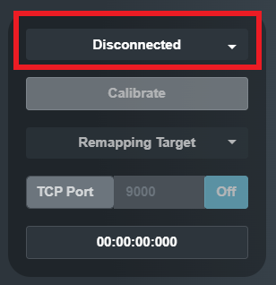
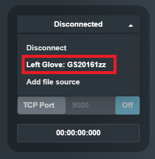
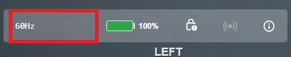
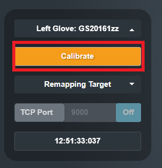
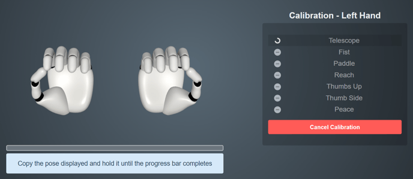
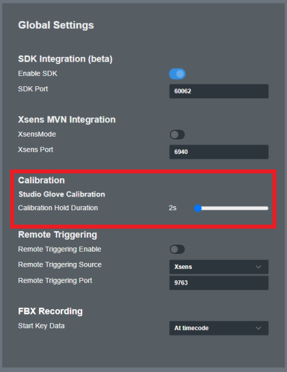

If a performer is already staged, the check box next to that performer will be ticked. To stage a performer, please select the check box next to that performer.

Hand Engine 3 has the ability to create and store calibration for multiple performers. Upon launching a Default performer will be automatically generated.
If you have Hand Engine Pro, you can add more than one performer by clicking on Add.
 
The performer will be created and automatically staged.
If a performer is already staged, the check box next to that performer will be ticked. To stage a performer, please select the check box next to that performer.
To unstage a performer, please de-select the check box next to that performer. You can select this box to bring the performer back to the stage.
 
To connect to your gloves, please stage a performer, and next to the associated hand (Left or Right), click on the drop-down box to select the connection mode:
Choose the appropriate option from the dropdown menu, either Left or Right hand, based on the side you are configuring. The serial number displayed in the dropdown will correspond to the one printed on the glove on the inside of the pull tab.



TIP: 
You can increase the progress bar duration in Edit -> Settings.